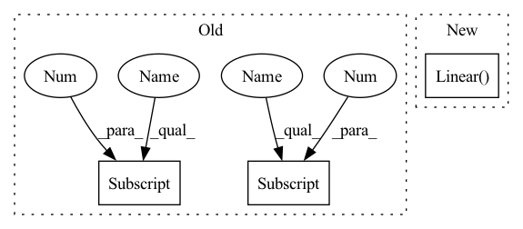

Pattern ID :1941

Before Change
self.output_tokens = output_tokens
self.image_size = to_2tuple(image_size)
self.patch_size = to_2tuple(patch_size)
self.grid_size = (self.image_size[0] // self.patch_size[0], self.image_size[1] // self.patch_size[1])
self.output_dim = output_dim
self.conv1 = nn.Conv2d(in_channels=3, out_channels=width, kernel_size=patch_size, stride=patch_size, bias=False)
After Change
if dual_patchnorm:
patch_input_dim = patch_height * patch_width * 3
self.patchnorm_pre_ln = LayerNorm(patch_input_dim)
self.conv1 = nn.Linear(patch_input_dim, width)
else:
self.patchnorm_pre_ln = nn.Identity()
self.conv1 = nn.Conv2d(in_channels=3, out_channels=width, kernel_size=patch_size, stride=patch_size, bias=False)
In pattern: SUPERPATTERN
Frequency: 3
Non-data size: 3
Instances
Fragment ID: 5049517
Project Name: mlfoundations/open_clip
Commit Name: bd82c5e61542a9e160df383f96611896528eb9b7
Time: 2023-02-06
Author: lucidrains@gmail.com
File Name: src/open_clip/transformer.py
M Class Name: VisionTransformer
N Class Name: VisionTransformer
M Method Name: __init__(18)
N Method Name: __init__(17)
M Parent Class: nn.Module
N Parent Class: nn.Module
M File Name: src/open_clip/transformer.py
N File Name: src/open_clip/transformer.py
M Start Line: 347
M End Line: 351
N Start Line: 341
N End Line: 365
'>
Before Change
channels += num_filters * tc_layers[i]
self.layers.add_module("attention_{}".format(len(att_layers)-1),
AttentionBlock(channels, att_layers[-1][0], att_layers[-1][1], device))
channels += att_layers[-1][1]
channels += additional_length
fc_layers = list(fc_layers) + [out_channels]
After Change
channels += additional_length
fc_layers = list(fc_layers) + [out_channels]
self.layers.add_module("fc_amalgamate", nn.Linear(seq_length, 1).to(device))
for i in range(len(fc_layers)):
self.layers.add_module("fc_{}".format(i), nn.Linear(channels, fc_layers[i]).to(device))
channels = fc_layers[i]
'>
Fragment ID: 5049516
Project Name: iffix/machin
Commit Name: 5b8d4a14723b753d9ee9d6dece151e40b3531c98
Time: 2020-04-25
Author: hanhanmumuqq@163.com
File Name: models/base/tcdnnet.py
M Class Name: TCDNNet
N Class Name: TCDNNet
M Method Name: __init__(11)
N Method Name: __init__(11)
M Parent Class: nn.Module
N Parent Class: nn.Module
M File Name: models/base/tcdnnet.py
N File Name: models/base/tcdnnet.py
M Start Line: 109
M End Line: 139
N Start Line: 195
N End Line: 218
'>
Before Change
):
super().__init__()
self.output_tokens = output_tokens
self.image_size = to_2tuple(image_size)
self.patch_size = to_2tuple(patch_size)
self.grid_size = (self.image_size[0] // self.patch_size[0], self.image_size[1] // self.patch_size[1])
self.output_dim = output_dim
self.conv1 = nn.Conv2d(in_channels=3, out_channels=width, kernel_size=patch_size, stride=patch_size, bias=False)
After Change
if dual_patchnorm:
patch_input_dim = patch_height * patch_width * 3
self.patchnorm_pre_ln = LayerNorm(patch_input_dim)
self.conv1 = nn.Linear(patch_input_dim, width)
else:
self.patchnorm_pre_ln = nn.Identity()
self.conv1 = nn.Conv2d(in_channels=3, out_channels=width, kernel_size=patch_size, stride=patch_size, bias=False)
'>
Fragment ID: 5049519
Project Name: mlfoundations/open_clip
Commit Name: bd82c5e61542a9e160df383f96611896528eb9b7
Time: 2023-02-06
Author: lucidrains@gmail.com
File Name: src/open_clip/transformer.py
M Class Name: VisionTransformer
N Class Name: VisionTransformer
M Method Name: __init__(18)
N Method Name: __init__(17)
M Parent Class: nn.Module
N Parent Class: nn.Module
M File Name: src/open_clip/transformer.py
N File Name: src/open_clip/transformer.py
M Start Line: 347
M End Line: 351
N Start Line: 341
N End Line: 365
'>
Before Change
padding=kernel_size[i] // 2))
net.append(nn.LeakyReLU(leaky))
net.append(nn.Flatten())
net.append(nn.Linear(output_units[0], output_units[0]))
self.net = nn.Sequential(*net)
def forward(self, x):
After Change
padding=kernel_size[i] // 2))
net.append(nn.LeakyReLU(leaky))
net.append(nn.Flatten())
net.append(nn.Linear(*output_units))
self.net = nn.Sequential(*net)
def forward(self, x):
'>
Fragment ID: 5049524
Project Name: vincentstimper/resampled-base-flows
Commit Name: b6dd8dba417711f5536a493c3f21bcc63e1b16c7
Time: 2020-09-25
Author: vincent.stimper@gmail.com
File Name: larsflow/nets.py
M Class Name: ConvNet2d
N Class Name: ConvNet2d
M Method Name: __init__(5)
N Method Name: __init__(5)
M Parent Class: nn.Module
N Parent Class: nn.Module
M File Name: larsflow/nets.py
N File Name: larsflow/nets.py
M Start Line: 27
M End Line: 27
N Start Line: 27
N End Line: 27